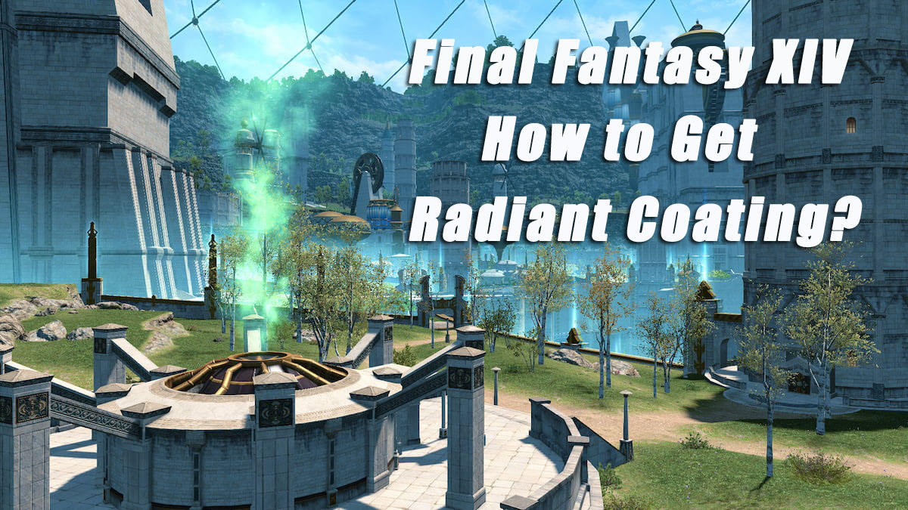

(
(
How to Get Radiant Twine & Coating in Final Fantasy XIV?
Radiant Twine & Coating are two essential ingredients you'll need to get in Final Fantasy XIV that you will need to collect to upgrade your weapons and gear. This guide will take you through the process of how to get Radiant Twine & Coating in Final Fantasy XIV.
Final Fantasy XIV - Radiant Twine
1. What's the Radiant Twine?
Radiant Twine is a translucent thread produced at the High Crucible of Al-Kimiya, used to enhance the properties of the Radiant Host's vestments.
2. How to Get Radiant Twine?
Here's what you need to know about how to get Radiant Twine in Final Fantasy XIV:
1). Sack of Nuts
With 3,000 Sacks of Nuts, you can purchase one Radiant Twine.
For Sack of Nuts, you'll need to complete Elite Marks for The Hunt in the Endwalker expansion and redeem them.
Two vendors will trade Radiant Twine for Sacks of Nuts:
• J'lakshai in Old Sharlayan (X: 11.9 Y: 13.2)
• Willmetta at Radz-at-Han (X: 10.5 Y: 7.4)
2). Asphodelos Mythos III
The Asphodelos Mythos III is another option vendors will accept in exchange for Radiant Twine.
Asphodelos, the Third Circle is a raid that will drop the Mythos III but will also occasionally drop a Radiant Twine on its own.
The vendors willing to sell Radiant Twine for this item:
• Djole in Radz-at-Han (X: 10.3 Y: 9.7)
• Mylenie in Labyrinthos (X: 8.3 Y: 27.6)
3). Aglaia Coin
Finally, you can make the trade for the Aglaia Coin.
These coins drop at the end of the new Aglaia Alliance Raid, which is only accessible after the A Brother's Grief story quest.
This item only has one vendor to make the trade. They are Nesvaaz and can be found in Radz-at-Han (X: 10.5 Y: 10.1).
3. How to Use Radiant Twine?
Radiant Twine can be traded for the following 35 items:
• Augmented Radiant's Cuisses of Fending
• Augmented Radiant's Cuisses of Maiming
• Augmented Radiant's Gauntlets of Fending
• Augmented Radiant's Gauntlets of Maiming
• Augmented Radiant's Gloves of Casting
• Augmented Radiant's Gloves of Healing
• Augmented Radiant's Gloves of Scouting
• Augmented Radiant's Greaves of Casting
• Augmented Radiant's Greaves of Healing
• Augmented Radiant's Greaves of Scouting
• Augmented Radiant's Helm of Fending
• Augmented Radiant's Helm of Maiming
• Augmented Radiant's Hose of Aiming
• Augmented Radiant's Hose of Casting
• Augmented Radiant's Hose of Healing
• Augmented Radiant's Hose of Scouting
• Augmented Radiant's Hose of Striking
• Augmented Radiant's Mail of Aiming
• Augmented Radiant's Mail of Casting
• Augmented Radiant's Mail of Healing
• Augmented Radiant's Mail of Scouting
• Augmented Radiant's Mail of Striking
• Augmented Radiant's Mask of Aiming
• Augmented Radiant's Mask of Striking
• Augmented Radiant's Sabatons of Aiming
• Augmented Radiant's Sabatons of Fending
• Augmented Radiant's Sabatons of Maiming
• Augmented Radiant's Sabatons of Striking
• Augmented Radiant's Scale Mail of Fending
• Augmented Radiant's Scale Mail of Maiming
• Augmented Radiant's Visor of Casting
• Augmented Radiant's Visor of Healing
• Augmented Radiant's Visor of Scouting
• Augmented Radiant's Wristgloves of Aiming
• Augmented Radiant's Wristgloves of Striking
Final Fantasy XIV - Radiant Coating

1. What's the Radiant Coating?
Radiant Coating is a translucent substance produced at the High Crucible of Al-Kimiya, used to enhance the properties of accessories worn by the Radiant Host.
2. How to Get Radiant Coating?
Here's what you need to know about getting Radiant Coating in Final Fantasy XIV:
1). Aglaia Coin
One option to purchase the Radiant Coating will require an Aglaia Coin.
You can acquire the coin throughout the Aglaia Alliance Raid. You must beat the A Brother's Grief quest to begin the Myths of the Realm Quests, which will unlock Aglaia Coin.
You can earn a single Aglaia Coin each week and bring it to Nesvaaz in Radz-at-Han to receive a Radiant Coating. He can be found at the coordinates (X: 10.5 Y: 10.1).
2). Asphodelos Mythos II
You can also trade in the Asphodelos Mythos II to a couple of vendors for the Coating.
For Asphodelos Mythos II, you need to participate in the Savage Raid version of Asphodelos: The Second Circle.
You'll need four Asphodelos Mythos IIs to purchase one Radiant Coating from the following NPCs:
• Djole in Radz-at-Han (X: 10.3 Y: 9.7)
• Mylenie in Labyrinthos (X: 8.3 Y: 27.6)
3). Sack of Nuts
Finally, you can trade 2,000 Sack of Nuts to vendors to purchase Radiant Coating.
You can acquire Sack of Nuts by completing the Elite Marks for The Hunt, although you'll need to ensure these targets from the Endwalker expansion.
Two vendors will trade Radiant Coating for 2,000 Sack of Nuts:
• J'lakshai in Old Sharlayan (X: 11.9 Y: 13.2)
• Willmetta at Radz-at-Han (X: 10.5 Y: 7.4)
3. How to Use Radiant Coating?
Radiant Coating can be traded for the following 20 items:
• Augmented Radiant's Bracelet of Casting
• Augmented Radiant's Bracelet of Healing
• Augmented Radiant's Choker of Casting
• Augmented Radiant's Choker of Healing
• Augmented Radiant's Earrings of Casting
• Augmented Radiant's Earrings of Healing
• Augmented Radiant's Ring of Casting
• Augmented Radiant's Ring of Healing
• Augmented Radiant's Bracelet of Fending
• Augmented Radiant's Bracelet of Slaying
• Augmented Radiant's Choker of Fending
• Augmented Radiant's Choker of Slaying
• Augmented Radiant's Earrings of Fending
• Augmented Radiant's Earrings of Slaying
• Augmented Radiant's Ring of Fending
• Augmented Radiant's Ring of Slaying
• Augmented Radiant's Bracelet of Aiming
• Augmented Radiant's Choker of Aiming
• Augmented Radiant's Earrings of Aiming
• Augmented Radiant's Ring of Aiming
That's all you need to know about getting Radiant Twine & Coating in FFXIV Endwalker. Do you want to know more? Stay tuned to BUYFFXIV4GIL.COM. Or you can get cheap FFXIV Gil from here while enjoying efficient, quality service. If you use the coupon code or become our VIP member, you will enjoy a better price!